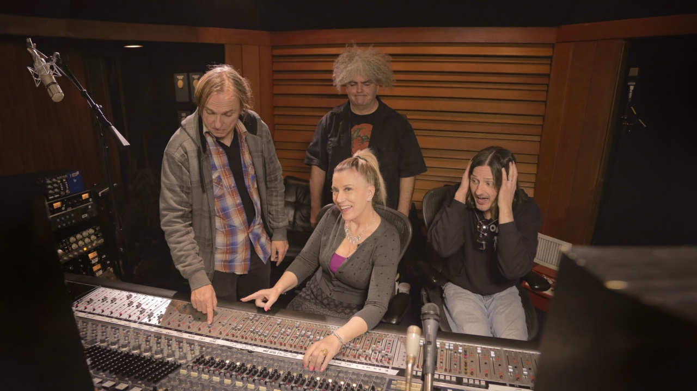

About Us
We are a team of professionals dedicated to help you create the sound you have always dream to achieve while improving the quality of your sound.
Trust our team of experts in audio with experience in recording, editing, mixing and mastering variuos proyects. Including music artists, bands, podcast creators, sound fx, and many other things.
Our Team
Chris Lord-Alge

Chris Lord-Alge’s talent is exemplified by his AllMusic credit list containing an astonishing 1100 entries, with huge names such as Bruce Springsteen, Tina Turner, Avril Lavigne, Cher, Muse, Celine Dion, Michael Bublé, Aerosmith, Madonna, Green Day, Meat Loaf, U2, Snow Patrol, Sheryl Crow, Savage Garden, Bon Jovi, Fleetwood Mac, Black Eyed Peas, The Rolling Stones, Smashing Pumpkins, James Brown, Eric Clapton, Nine Inch Nails, Foo Fighters, My Chemical Romance and many more.
He has won six Grammy Awards, and with his position as one of the world’s leading mixers, has been nicknamed ‘Lord of the Mix’. His dominance is illustrated perfectly by Lord-Alge’s initials, CLA, being an instantly recognizable brand name within the music industry. For example, the creation of the Waves ‘Chris Lord-Alge Signature series’, features plugins aptly titled, CLA Drums, CLA Bass, and CLA Guitars, and so on, that represent his work and style.
Chris Lord-Alge achieves his unique sound through an equally unique approach, which has remained largely unchanged since the late 1990s. His two main tools of the trade are a 60-input 4056 E-series SSL desk and his beloved Sony 3348 48-track digital tape recorder. The only major change in his approach has come from the omnipresence of the DAW, with Lord-Alge now using plugins in Pro Tools to complement the outboard in his studio, Mix LA.
Michael Brauer

Michael Brauer is one of the founding members of the seminar program. Brauer has an impressive back catalogue, having worked with Luther Vandross, Aretha Franklin, The Rolling Stones, Bob Dylan, Paul McCartney, Coldplay, John Mayer, Ash, My Morning Jacket, Ben Folds, Eric Clapton, Prefab Sprout, Leonard Cohen, Pet Shop Boys, Dream Theater, Elle King, James Bay and Calle 13 to name but a few. He has won seven Grammy Awards, including best engineered album for John Mayer's "Battle Studies".
He currently works in Electric Lady Studio B in New York, where he works with an SSL 9080 J-series desk, as well as an vast collection of outboard. The outboard is at the heart of Brauer’s approach to using compression and EQ, that is so elaborate that Brauer has given it a trademarked name: “Brauerize”. The mixer explains that it, “is the combination of a few different compression techniques, including multi-bus, parallel and post-fader send/return compression, which focus on mixing into compression, allowing me to ride instruments, vocals, and my entire mix, into the sweet spot.”
Brauer’s ‘Brauerizing’ technique, of parallel compression of vocals and/or instruments is complimented with his heavy use of software, which as he describes, allows things that one cannot get from the hardware, such as “great de-essers and fixing tools”.
Andrew Scheps

Andrew Scheps has an incredible career of achievements, which incorporates a credit list featuring Red Hot Chili Peppers, Adele, Metallica, Black Sabbath, Michael Jackson, Robbie Robertson, Justin Timberlake, Iggy Pop, U2, Jay-Z, and many more, as well as several Grammy Awards.
Scheps’ work on the Red Hot Chili Pepper’s album Stadium Arcadium in 2005 was a turning point for his approach to engineering. He found the band’s decision to record and mix entirely in analogue so refreshing that he fitted his Punkerpad West studio with two Neve 8068 desks to go with his wall of analogue outboard. Scheps continued to work like this until the fall of 2013, when he was offered a different kind of project to mix. A choice faced him: either pass on the work and continue with his methods where he was in France at the time, or accept the mission and take a more in the box approach to his work.
He opted for the latter, and found what he initially regarded as a one-off was much more attractive than anticipated. “Going back into the box wasn’t a sonic decision, but I actually re-discovered that I really like it. It’s great to be able to work on three or four songs at the same time. I have not gone back to working on the desk since then. While I miss some of the visceral hands-on aspects of the console, there is a lot of creative freedom working this way. It might seem like a drastic change, but it is only the tools that have changed: remarkably my philosophy and sound have stayed the same.”
Tony Maserati

Tony Maserati is one of the world’s leading mix engineers. Over the course of his working career he has amassed a list of credits that runs into the hundreds, with worldwide sales of over 100 million units including names such as Beyoncé, Robin Thicke, Jason Mraz, k.d. Lang, Mary J Blige, David Bowie, Usher, Puff Daddy, Notorious BIG, Jay-Z, Lady Gaga, Avril Lavigne, Cher, Keith Urban, R Kelly, Destiny’s Child, Jennifer Lopez, Alicia Keys, Lil’ Kim, and the Black Eyed Peas. Maserati is a Grammy Awards winning engineer, he's one of the few mixers with a Waves Signature Plugin Series — The Tony Maserati Collection — turning his name into a global brand.
Maserati is known for his hybrid analog/digital setup approach that he has favoured for many years, as well as his effects comprising a combination of the best of digital, (using plugins by Waves, UAD, Soundtoys, Softube and many others), and the best of analog by way of Alan Smart, Telefunken, Shadow Hills, Pendulum, Universal Audio, Chandler, Neve and Urei. Analog gear continues to prove invaluable to Maserati because of, he says, “the headroom”. However, Maserati also advocates the portability of 21C digital equipment, and regularly mixes while travelling using a laptop with Sennheiser HD600 headphones, Pelonis Model 42s speakers, and a Black Lion DAC.
Stlvia Massy

Sylvia Massy is an American entrepreneur, music producer, mixer and engineer, writer and artist based in the United States. Massy is perhaps best recognized for her work on 1993’s Undertow, the full-length double platinum-selling debut for Los Angeles rock band Tool and her works with System of a Down, Johnny Cash and the Red Hot Chili Peppers.
While working at Larrabee Sound in West Hollywood, Sylvia connected with producer Rick Rubin and would work with him on several projects including Tom Petty and the Heartbreakers, Slayer, Donovan, Geto Boys, The Black Crowes, Danzig, and System of a Down’s debut album, as well as Johnny Cash’s album Unchained, which won a Grammy award for Best Country Album in 1997. Further into the ’90s, Massy continued to produce many popular artists, aforementioned Red Hot Chili Peppers, Sevendust, and Powerman 5000, which featured guest appearances from Rob Zombie and actor Malachi Throne from Star Trek fame. In 1997 alone, Massy co-produced, engineered and mixed Foo Fighters, Björk, Patti Smith, Sonic Youth and for the Beastie Boys’ « Tibetan Freedom Concert » in New York with Adam Yauch and producer Pat McCarthy.
Also during her time in Los Angeles, Massy engineered, produced or mixed on recordings from a diverse group of internationally-known artists, including Aerosmith, Babyface, Big Daddy Kane, Bobby Brown, Prince, Julio Iglesias, Seal, Skunk Anansie, Paula Abdul, Ryuichi Sakamoto and many more. Not to mention her work with manager Gary Kurfirst on Irish rock band Cyclefly for Kurfirst’s Radioactive Records. Massy’s repertoire is far and wide, giving her a continuously competitive edge and ability to create with artists across genres and decades.